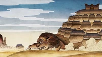
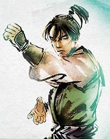
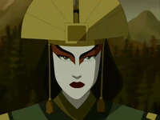

ORIGIN

In the era of Raava, most of the later Earth Kingdom was part of the Spirit Wilds, and its people were forced to survive the wrath of spirits and the untamed nature. The predecessors of the Earth Kingdom found several ways to survive these hardships: Some retreated into cities built atop lion turtles. They received the element of earth from these sentient beings that granted the power through energybending. The humans could request the ability whenever they ventured into the Spirit Wilds, to aid in the gathering of food and resources.Others chose a nomadic lifestyle, traveling the wilds and staying in one place only as long as they could. One particular tribe of nomads, however, was able to build a permanent city under the guardianship of the spirit Lady Tienhai in what would become the city of Tienhaishi western Earth Kingdom.Several aspects of life and observances practiced by the predecessors of the first citizens of the Earth Kingdom later became part of the nation's shared culture, notably in the creation of fortified strongholds constructed out of earth, akin to the structures seen in lion turtle cities populated by early Earth Kingdom citizens.
WARRING STATES PERIOD
After Avatar Wan closed the spirit portals and most spirits left the mortal world, the lion turtles renounced their roles as protectors of mankind. At this point, the predecessors of the Earth Kingdom left the lion turtle cities in favor of establishing settlements throughout the mainland, while most of the nomads settled down. Soon after, the ancestors of the first Earth Kingdom citizens began to wage wars, inventing the large earth coins as primary weapons for their warriors to use. Avatar Wan died after intervening in a battle of Earth Kingdom predecessors. Unlike the other nations, where one culture eventually prevailed, the later Earth Kingdom was so large and diverse that several cultures and ethnicities emerged and survived to fight for independence and dominance.
In the northeast, people carved a small subterranean settlement out of rocks. Mining and trading beautiful illuminated crystals, the agglomeration began to grow into a city until it reached the surface. Soon after, the catacombs were abandoned and the new metropolis on the surface became the mighty city-state of Ba Sing Se. In its early days, Ba Sing Se was attacked by rival polities several times, but saved by its strategically favorable location: Its southern enemies had to march through the treacherous Taihua Mountains to reach the city, and were destroyed by the mountain range's horrible blizzards.
In the west, the two lovers, Oma and Shu, became the first people to learn earthbending directly from badgermoles. The villages the two were from were at war, however, and eventually Shu was killed in battle. Heartbroken, Oma used her abilities to ensure peace and force the villages to unite. The city they built was named Omashu, and became a powerful city-state in its own right. The city of Lady Tienhai prospered and continued to grow as well. In the south, some earthbending nomads made the Si Wong Desert their home, learning to sandbend and finally forming the Si Wong tribes. They were predated by the beetle-headed merchants, who had lived in the desert since ancient times, and continued to roam it for coming centuries.
Some chose not to settle down, however, and became nomads. Some of these nomads waged war against settled people and surprised their footslogged armies with their tactic of bringing multiple mounts, switching between them on the fly to keep the animals as fresh and speedy as possible. They would later be recorded in the annals of the Earth Kingdom as "nomadic barbarians".
ASCENSION OF THE EARTH KINGDOM
Over time, the monarchs of Ba Sing Se became increasingly powerful and began to unite and subjugate the numerous kingdoms and peoples of the later Earth Kingdom. They left some kings and nobles in power, however, as long as they submitted to Ba Sing Se. Eventually, one ruler of Ba Sing Se ended the unification wars in victory and crowned themselves the Earth Kingdom's first monarch, not to leave the capital city until their death. An early line of Earth Monarchs was the Hao dynasty. Despite Ba Sing Se's victory, the Earth Monarchs were unable to establish a centralist or authoritarian regime due to the kingdom's sheer size. As a result, the Earth Kingdom became a confederate monarchy, divided into several semi-autonomous provinces. Over time, the power of the Earth Monarchs would wax and wane, but none of them would truly control all of the kingdom. Some regions, like the Si Wong Desert were too remote and difficult to govern, whereas others were simply too unimportant for the central government to care about them. The government's inability to exercise full control allowed outlaw groups to become unusually sophisticated in the Earth Kingdom: They developed their own culture and code of conduct, and became known as daofei. Despite this, the Earth Monarchs usually held absolute power in Ba Sing Se. At some point, a group belonging to the Bhanti arrived in the Earth Kingdom and became the country's first sages. As time went on, the Earth Sages transformed into little more than powerful officials who were no longer interested in spiritual matters. This development contributed to the growth of corruption in the Earth Kingdom.
Several Earth Monarchs became firm allies of various Avatars, with the two sides helping each other. Three centuries before Avatar Yangchen's childhood, Earth King Zhoulai was a companion of one Avatar.
PLATINUM AFFAIR AND AFTERMATH
During the childhood of Avatar Yangchen, the throne of the Earth Kingdom was contested between the reigning Earth King, Feishan, and the rebel General Nong. Neither side wanted to throw away their long-term chances for the advantage of a single moment, and the two sides avoided a pitched battle, prolonging the war. Impatient with this, the leaders of the Fire Nation and the Water Tribes conspired to back Nong over Feishan by sending him valuable platinum ingots, while only loaning paper bank notes to Feishan, hoping the loyalists would lose confidence in the king's ability to pay them with promises alone. However, Feishan found the strategic moment he had been looking for, and wiped Nong off the face of the map at Llamapaca's Crossing. Knowing what the leaders of the other two nations had done, Feishan seized the platinum ingots, melting them down and using them to plate the badgermole statue behind his throne. He declared that the Earth Kingdom's ports would be closed until the surface fully tarnished and appeared as stone; which would not be for a century or more.
The Fire Nation and Water Tribes responded by declaring similar states of isolation. However, the king and his court desired goods from abroad, and there was money to be made on exports. The three nations met and agreed to the establishment of four cities open to controlled amounts of international trade, under the purview of noble and merchant families. Two of these shang cities, Bin-Er and Taku, were formally in Earth Kingdom lands, but became special territories. The cities were not allowed to maintain an army to defend themselves, and had to follow the strict terms of their charters. These shang cities saw high rates of corruption, as shangs often shortcharged their workers, and secretly conducted obscene amounts of unofficial trade. The cities became full of spies desperate for secret information; and while many migrated to the cities in search of a better life, they were not allowed to leave by corrupt control offices unless it benefitted the shangs, compounding problems of poverty and mass unemployment.
When Yangchen became a fully-realized Avatar, her first mission was to the grand Earth Kingdom city of Tienhaishi, which was being threatened by General Old Iron after the death of Lady Tienhai's human form. A great battle ensued between the spirit and the Avatar, although they agreed that the city would be abandoned. The citizens were evacuated, and while Yangchen found it hard at first to resettle them, she was able to find new homes for the people of Tienhaishi across the Earth Kingdom by playing the political game.
Soon afterward, Yangchen turned her attention to the shang cities and the aftermath of the Platinum Affair. She took note of how many more ships had docked at Bin-Er than were officially permitted by charter, and when she came to the Bin-Er gathering hall for her official visit, she threatened to expose this to the Earth King unless the shangs implemented charitable policies. The shangs of Bin-Er began to panic, and sought to implement the Unanimity project, a secret weapon that would allow them to break free of the Earth King and rewrite any charter or law. While Yangchen left to investigate, Zongdu Henshe went to Jonduri to petition Zongdu Chaisee to grant him the weapon. She did not intend to follow through, but Henshe used his double agent Kalyaan to retrieve the combustionbender human weapons and bring them to Bin-Er. As Thapa, Xiaoyun and Yingsu began their display of power, they were approached and successfully apprehended by the Avatar after she returned from Port Tuugaq, and confined to the Northern Air Temple with Henshe, while the temple monks provided alms in Bin-Er. Yangchen reported to the Earth King that the fireballs in the sky had been a spiritual disturbance that had broken out after Bin-Er had fallen out of balance, consumed by greed. She petitioned for and was granted the administration of Bin-Er after promising to improve the lives of its people and increase royal revenues, claiming she would rely on Avatar Szeto for advice.
Later in her life, Yangchen signed a treaty with the Fifth Nation, an ethnically mixed people of pirates, which protected the Earth Kingdom's southern coast from their attacks.
INSTABILITY, CIVIL WAR, AND CONSTITUTIONAL CHANGE
After a long time of relative prosperity, the Earth Kingdom began to unravel during the life of Avatar Kuruk. His seemingly carefree lifestyle and early death at 33, along with the problems in identifying the next Avatar, resulted in power-hungry people, rebels, and criminals in becoming bolder throughout the world. This development particularly affected the Earth Kingdom, whose inner provinces slowly descended into chaos. Some daofei reorganized as rebels, launching the Yellow Neck Uprising, and devastating large swaths of land in the name of their fanatical spiritual beliefs. Instead of quelling the rebellion, the Earth Kingdom government left its remote provinces to fend for themselves. Other daofei groups became more active as well, fighting each other in brutal turf wars. The Flying Opera Company crime network grew especially powerful, spreading across the entire Earth Kingdom. At its peak, the Flying Opera Company was powerful enough to force government officials to do its bidding. In the south, Tulok, a leader of the Fifth Nation, broke the old treaty with Avatar Yangchen. His fleet consequently began ravaging not just trade routes but also the Earth Kingdom's coast. In the face of chaos and violence, desperate nonbenders flocked to spiritual and militant movements like the Kang Shen sect.

Even though the country was torn apart by unrest, much of the Earth Kingdom's leadership proved too corrupt and self-serving to alleviate the crisis. Kuruk's former earthbending teacher Jianzhu consequently stepped in, assumed many of the usual duties of the Avatar, and struggled to keep the Earth Kingdom from slipping into chaos by creating a far-reaching political network. He greatly rewarded his allies, attempted to help the common people, but also used extreme methods to destroy those whom he saw as agents of anarchy. Most notably, he ruthlessly crushed the Yellow Necks, hunted down and killed daofei outlaws en masse, and destroyed several Earth Kingdom politicians who challenged him. By the early 3rd century BG, Jianzhu was the de facto ruler of much of the country. He eventually identified a young man named Yun as the Avatar, and thereby managed to further restore order in the Earth Kingdom. Yun became crucial for the many treaties which Jianzhu forged with the country's powerful figures. As time went on, however, Jianzhu became increasingly ruthless and began to use corrupt officials to maintain his political network. As a result, he never managed to end the extreme corruption that plagued much of the Earth Kingdom. Daofei also continued to roam the country, although their influence was diminished due to Jianzhu's purges.
As it turned out, a servant girl named Kyoshi was the true Avatar. This revelation resulted in a series of events that antagonized Jianzhu and Kyoshi. The Avatar fled and joined the remnants of the Flying Opera Company, while Jianzhu desperately attempted to gain control over her. He hoped that he could train her into becoming the ideal Avatar who would restore order in the world. Although kept mostly secret, the hunt for Kyoshi weakened Jianzhu and was exploited by his rivals led by Chamberlain Hui. In the end, Jianzhu successfully murdered Hui and his allies, but was in turn killed by Yun.

The death of a significant part of its political leadership, most importantly Jianzhu and Hui, threw parts of the Earth Kingdom into chaos. In addition, the revelation of Kyoshi's Avatarhood upset many, as Yun had been a popular and charismatic figure, whereas Kyoshi was associated with criminals. Many influential figures in the Earth Kingdom outright refused to accept Kyoshi's Avatarhood, while others accepted her status but intensely disliked her on a personal level. Without support by the country's elites, Kyoshi struggled to improve stability in the Earth Kingdom.
At some point over the next two years, Earth King Yi Ming ordered the construction of the Ba Sing Se monorail. After Kyoshi returned from dealing with the Camellia-Peony War in the Fire Nation, the country was still suffering from daofei, corrupt law enforcement, and Fifth Nation splinter fleets. Kyoshi created a task force to carefully remove the most dangerous daofei and violent criminals from Ba Sing Se, though the task force started targetting many other dissidents and ordinary citizens after she left the city to deal with other issues and the organization was put under the Earth King. A diplomatic incident threatened to unfold after Ambassador Quin of the Fire Nation's children were kidnapped, and Rangi trusted others to deal with the situation as she left to inform Kyoshi.
The unrest in the Earth Kingdom was eventually exploited by the 46th Earth King who believed that the vassal rulers and provinces around his realm had too much power. Strong-willed and imperious, he intended to change the Earth Kingdom into an absolute monarchy with himself as supreme monarch. This aroused his subjects' anger, and eventually one warlord named Chin took up arms to seize power from the unpopular king. He began a revolt in the western parts of the Earth Kingdom that had been most adversely affected by the events surrounding Jianzhu's death. Chin's rebellion quickly escalated into an open civil war, while the Earth King proved incapable of stopping him. Chin's armies conquered the whole kingdom, including mighty cities such as Omashu, until only Ba Sing Se and the home peninsula of Avatar Kyoshi remained free. Chin attempted to force Kyoshi into submission as well, but this led to his death and the creation of Kyoshi Island. Without his leadership, the revolt was suppressed and the Earth King resumed his rule over the whole kingdom.
Nevertheless, his inability to deal with Chin's rebellion had repercussions. The peasants of Ba Sing Se, believing the monarchy to be an outdated regime only oppressing them, rose up in defiance. The Peasant Uprising in Ba Sing Se threw the capital into chaos, and only when Kyoshi forced the 46th Earth King to accept a new constitution that limited his power while empowering the common people, the peasants dispersed. In return for the king's reluctant cooperation, Kyoshi created the Dai Li as the secret police of Ba Sing Se. These elite earthbenders were intended to defend the Earth Kings' interests by suppressing and imprisoning subversive individuals and groups.
PERIOD OF PROSPERITY
In the nearly two centuries Kyoshi lived after drafting a new constitution with the Earth King, she maintained peace between the fifty-five states of the Earth Kingdom, and helped to implement policies that would benefit the poorest in society. Meanwhile, the embarassed and diminished order of sages sought redemption by embracing Kyoshi's policies, and began to regain the people's trust by returning to their origins as wise advisors and academics. At the time of Kyoshi's death, the Earth Kingdom and all four nations had experienced an unprecedentedly long period of peace, and the sages sought to uphold her policies after a new Avatar was born in the Fire Nation.
The new constitution greatly had greatly weakened the Earth Monarchs, and the empowered bureaucracy soon became the true rulers of the kingdom in later periods. The immediate successors of the 46th Earth King did nothing to regain their power. Instead, they delegated their authority to the bureaucrats and officials in favor of pleasure-seeking and leisure during the long peace under Kyoshi's later life.
CORRUPTION AND GROWING INTERNAL TENSIONS UNDER EARTH KING JIALUN
The political situation changed once more upon the ascension of Earth King Jialun who ruled the Earth Kingdom when Avatar Roku was still young. Though Jialun feigned being incompetent and was believed to be harmless by many in the international community, he was an exceedingly calculating man, who was in fact manipulating everything to his own advantage. He attempted to reverse the constitution followed by his predecessors, and began manipulating the constitution, and began to change some of its aspects. The Earth Sages spoke out against Jialun's actions and his corruption, honorably wishing to maintain the age of peace and prosperity. In response, the Earth King had the Dai Li round up every single Earth Sage in a purge known as the Night of Silenced Sages. In time, the temples of the sages reopened as Royal Learning Halls, tightly controlled by the crown, with a small number of those who had once been sages returning to serve the government as Grand Lectors, renouncing all ties to their previous order.
Jialun's actions earned the ire of Queen Guo Xun of Omashu, who saw the Earth King as a cheap and selfish man who was insecure in his own power. A bitter rivalry erupted between the two monarchs, and Ba Sing Se and Omashu began to compete for prominence more than ever. The Queen of Omashu did all she could to undermine the Earth King short of starting an all-out war. Both sovereigns had spies in each other's courts, and both throne rooms were vipers' nests.
Following the purge of sages, the Earth King manipulated the political system to his own benefit, while continuing to portray himself as incompetent. The realm began to suffer under his greed, and Jialun set the states against each other and fomented xenophobia so that the peasants had something to hate other than the Earth King. All from an appearance of weakness, he removed all opposition and subjugated his people, while manipulating events so that people were focused on threats from outside rather than within. Some realized the true extent of the government's greed, such as the folk hero Langzi who brought corrupt officials to justice, or "freedom fighters" funded by Tiqriganiannig of the Southern Water Tribe. While the world was on the brink of a technological renaissance, innovation stagnated in the Earth Kingdom: there were always inventive and creative people, but anything new that they produced was now seized by the crown and gifted out to the Earth King's vassals as he saw fit.
INTERNATIONAL CONFLICTS, DECLINE, AND IMPERIALIST AGGRESSION
During the reign of Jialun, a massive tsunami hit the northern coast of the state of Chenbao. The people blamed waterbenders from the Northern Water Tribe for sending the tsunami, while the Water Tribe blamed earthbenders. War threatened to break out, until Avatar Roku was forced to intervene before the conflict could escalate further. Tensions remained high between the two nations, and the Governor of Chenbao placed a tax on Northern Water Tribe goods and merchant ships in the Northern Passage, that was in practice unenforceable. Northern Water Tribe goods sold in the Earth Kingdom were thus considered contraband, and the governor hoped that this fact would force the Earth King to send military aid to enforce the tax.
The southern Earth Kingdom suffered from floods during Jialun's reign, devastating small towns and infrastructure. Instead of providing aid, the Earth King only offered military assistance on the condition that the people affected provide work on the Outer Wall of Ba Sing Se, and many had no choice but to accept. The only party interested in charitable aid were the Air Nomads of the Southern Air Temple.
Earth King Jialun's government also recognized the expansionist ambitions of the early government of Fire Lord Sozin, after the Fire Lord claimed the uninhabited Natsuo Island located between the two nations after a large cache of ore was discovered there. The Earth King sent his military vessels off the coast of the island on "training exercises", hoping to goad Sozin into making the first move. The Earth Kingdom provided no aid or shelter to the people of the eastern Fire Islands affected by the seismic instability following the disaster at Crescent Island. Instead of blaming the limited aid provided by their own Fire Lord, the people of the Fire Nation began to buy into anti-Earth Kingdom sentiment, which was growing in the rest of the nation in the ongoing conflicts over resources.
Despite its internal troubles, the Earth Kingdom remained an economic and military power to be reckoned with. The west and south of the kingdom continued to flourish, and great cities like Taku and Omashu benefited from trade and industrial growth. The military of the Earth Kingdom was still fiercely loyal to the monarchy, and much of its forces remained reliable and experienced.
This situation took a change for the worse with Fire Lord Sozin's initial attacks on the Earth Kingdom around 30 BG. The Fire Nation easily conquered a number of cities and resource-rich areas in the northwestern kingdom to transform them into colonial possessions. The Earth Kingdom government proved unable to defend its territories, and only when Avatar Roku intervened was Sozin's expansion stopped. The colonies remained on Earth Kingdom soil, however, and after Roku's death the Fire Lord launched an all-out invasion of the kingdom. Western trade centers like Taku were completely destroyed, and by Sozin's death in 20 AG, the Fire Nation had gained a strong foothold in the northwestern continent. The Earth Kingdom military fought with great determination and slowed the Fire Nation advances down as best as it could. Its efforts were not enough to stop the Fire Nation, however, and by 79 AG most of the west and northwest had fallen to the invasion forces. The Earth Kingdom suffered terribly due to the war, experiencing destruction, hunger, and displacement. Thousands of refugees fled into the safety of Ba Sing Se, swelling the slums of the Lower Ring.
CONSPIRACY AND FALL
The continuing trend of Earth Monarchs' loss of power resulted in an increasing stagnancy and weakness of the central government. The provincial governments and vassal rulers of the Earth Kingdom were consequently able to exercise more and more autonomy until they were effectively independent.

Eventually, the 51st Earth King died, leaving only his four-year-old son to succeed him. The ambitious Grand Secretariat of Ba Sing Se Long Feng recognized his chance to seize power over the kingdom and made child-king Kuei his puppet. Using the Dai Li, Long Feng suppressed knowledge about the war in order to maintain social order and a stable economy, effectively outlawing every mention of it within the Upper Ring and preventing the king from even learning about its existence. However, outside the safety of the walls and away from the watchful Dai Li, disorder in the midst of the war was pervasive; in some areas, officials and soldiers abused their power by bullying and extorting the local population. In other areas, citizens were largely left to fend for themselves.
The war, meanwhile, went increasingly badly for the Earth Kingdom. The Fire Nation advanced east and south, subjugating the west, the shoreline of the West Lake and much of the south. In 94 AG, the Fire Nation Army under Crown Prince Iroh reached the Outer Wall of Ba Sing Se, and began the six hundred-day Siege of Ba Sing Se. Even though the Crown Prince's troops breached the Outer Wall, they retreated after the commander's son Lu Ten was killed in action. Nevertheless, the siege was a disaster for the Earth Kingdom, as it had not only lost large quantities of resources and manpower, but also received a crushing blow to its population's morale after Ba Sing Se was proven not to be impenetrable.
The Earth Kingdom finally fell five years later, after a time of hard fighting that saw the loss of Omashu, the last stronghold in the west. After Avatar Aang had forcefully ended the Conspiracy of Ba Sing Se, Earth King Kuei's power was briefly restored and Long Feng imprisoned. Despite this, the Dai Li remained loyal to Long Feng, as the secret police feared that the king would deprive it of its power. At the same time, the Fire Nation Crown Princess Azula and her team infiltrated the capital. Long Feng and Azula began to cooperate to end Kuei's reign and the Avatar's life, culminating in the Coup of Ba Sing Se. Azula and the Dai Li forced the king into exile, only to betray Long Feng and claim the city in the name of the Fire Nation. The Dai Li's betrayal thus led to the fall of Ba Sing Se, and with it, the Earth Kingdom.
RESTORATION AND REFORMATION
The Fire Nation military used this opportunity to invade the remaining Earth Kingdom, but despite the fall of the central government, Earth Kingdom citizens continued to resist. Rebellions began to spread, while remnants of the Earth Kingdom military remained a threat to Fire Nation rule. The Fire Nation was unable to suppress the revolts, and on the Day of Black Sun, the rebels managed to liberate several cities such as Omashu. Soon after, Avatar Aang defeated Fire Lord Ozai, ending the Hundred Year War with the victory of the Earth Kingdom. Kuei returned to the throne, and the Earth Kingdom government was reformed with the Earth King regaining the power his predecessors had lost. The Fire Nation also began to pay war reparations to the Earth Kingdom.
Together with the Avatar and Fire Lord Zuko, Kuei started the Harmony Restoration Movement to remove the Fire Nation colonies from Earth Kingdom soil and resume peaceful cooperation between the different nations. The announcement of the Harmony Restoration Movement triggered a great celebration in Ba Sing Se. Initially, the decolonization was successful and without incidents, but after one year the oldest colonies were to be disbanded. As these cities were over one hundred years old, their population was by then ethnically mixed and deeply rooted in the country. As a result, there were political complications that threatened to restart the Great War when Kuei attempted to forcefully remove the colonies, believing the lands to be rightfully part of the Earth Kingdom. Only when Avatar Aang intervened was the conflict resolved by granting the colonies complete autonomy. In the next years, the colonies and adjacent territories in the northwestern Earth Kingdom continued to prosper. At one location, a large industrial agglomeration sprung up. The settlement became known as "Cranefish Town" and became a major economic hub.
Elsewhere in the Earth Kingdom, some of the refugees who fled to Ba Sing Se during the war returned home, though they sometimes found that their hometowns had been pillaged and destroyed. Many began the laborious task of rebuilding their villages, and sometimes bandits took advantage of the recovery efforts. Some people had been separated from their loved ones; sometimes, they ended up reuniting, though other times they learned that they had died, or would never know the answers to these difficult questions. At the same time, some war refugees stayed in Ba Sing Se, but were vulnerable to crime bosses and government officials who wanted to take advantage of the chaotic time. Over the next few decades, the divide between the rich and poor would in fact worsen in Ba Sing Se.
Meanwhile, Earth King Kuei struggled to rebuild his nation, while strengthening cooperative relations with the other countries. Despite his efforts, he could not solve all the problems of his war-ravaged country. At some point during Kuei's reign, the former Fire Nation colonies and other ethnically mixed areas such as Cranefish Town were transformed into the United Republic of Nations. The Earth King agreed to cede large parts of the northwestern kingdom to the new sovereign country, resulting in lasting animosity among many Earth Kingdom citizens who regarded the United Republic as illegal occupation. Regardless, many people of Earth Kingdom origin migrated to the new state in hopes of better employment and more freedom.
HOU-TING'S REACTIONARY REGIME AND COLLAPSE
Following Earth King Kuei's death, his daughter Hou-Ting assumed power. She revised many policies of her father, and preferred to rule as autocrat for her own benefit. Many parts of the Earth Kingdom continued to suffer from great poverty and became increasingly outpaced in regards to technology and economy when compared to the Fire Nation, United Republic, and Water Tribes, due to a lack of funds attributed to the development by Queen Hou-Ting. Instead of alleviating the crisis, Hou-Ting used the Dai Li to silence dissidents and expanded her military. Faced with these developments, some regions of the Earth Kingdom such as the city state of Zaofu distanced themselves from the central government until they became factually independent. Smaller insurgencies by groups like Gombo's barbarians also erupted, as rebels prevented the collection of excessive taxes. Warlords were also active in parts of the Earth Kingdom during this period.
Fomented by increasing social conflicts under Hou-Ting's authoritarian regime, the Red Lotus' assassination of the Earth Queen in 171 AG sparked an open revolt of Ba Sing Se's lower class citizens. Since Hou-Ting had stripped the bureaucracy of all meaningful power and claimed it for herself, there was nobody able to effectively step in and maintain order after her death, causing a total collapse of social order all across the Earth Kingdom. Many loyalists to the monarchy went into hiding and almost all royal artifacts were lost in the looting that pursued, with a single earring being one of the few remaining items. Despite international efforts, the anarchy led to the complete fragmentation of the kingdom into independent states, while massive, well-equipped bandit groups began to terrorize the people.
RISE OF THE EARTH EMPIRE AND ABOLITION OF THE MONARCHY
The leaders of the other nations decided that if order in the Earth Kingdom was to be restored, the power vacuum needed to be filled; to that end, they attempted to enlist Suyin Beifong. When she declined, Kuvira, the captain of Zaofu's guard, gathered a coalition of several wealthy citizens of Zaofu, as well as parts of the Zaofu security team, to stabilize Ba Sing Se. This action prompted the world leaders to place their trust in her, and they appointed her the provisional leader of the nation. In this capacity, she expanded her army and began the task of reuniting the Earth Kingdom. Soon becoming known as the "Great Uniter", this interim president restored law and order in large parts of the nation through annexation and military discipline. However, as Kuvira's influence and territory grew, she began to enact more totalitarian measures as a means of securing complete control over her occupied provinces. These included rounding up dissidents and ethnic cleansing of people of Water Tribe and Fire Nation ancestry, locking both up in detention and reeducation camps. She also had her scientists, led by Varrick and her fianc Baatar Jr., begin research into the use of spirit vines as military weapons.
With the nation reunited by 174 AG, she was supposed to step down after Wu's coronation ceremony, but when the time came to transfer her power to Wu, the great-nephew of the late Hou-Ting, Kuvira denounced Wu's authority and claimed power for herself, renaming the Earth Kingdom the "Earth Empire". However, the other nations no longer acknowledged her rule as legitimate, denouncing her ruling her nation as a military dictatorship. Unfazed, Kuvira consolidated her power by conquering Zaofu, the last independent state in the new Earth Empire, despite Avatar Korra's interference.
With all Earth Kingdom states now united under her banner and her spirit energy cannon completed, Kuvira declared it was time to reclaim the land that now formed the United Republic of Nations, proclaiming the nation had been founded on stolen Earth Kingdom land. With the spirit cannon mounted on a colossal platinum-plated mecha suit, Kuvira marched her army into the United Republic and attacked Republic City, decimating large portions of the metropolis and its military defenses. After Korra saved her from being killed by her own energy cannon and the two of them ended up in the Spirit World, Kuvira finally surrendered and ordered her troops to lay down their weapons.
After Kuvira's defeat, the monarchy was restored as the center of power. King Wu decided, however, that it would be better if the monarchy was abolished in favor of independent states with a democratically elected government, akin to the system in the United Republic, an idea supported by Avatar Korra, who vowed to assist him in making the idea a reality. Despite opposition by several political factions, Wu and the governments of the Earth Kingdom's states eventually worked out a plan for the gradual democratization and dissolution of the country. The State of Gaoling was selected as the site for the first elections, but after remaining Earth Empire loyalists under Commander Guan exploited the opportunity to attempt a resurgence, Wu realized that it had been unrealistic to expect the Earth Kingdom to become a democracy overnight. He announced that every state should hold their own elections when their citizens' were ready for it and that he would continue to serve as king until all states had done so.
Since the kingdom has recently witnessed two dictatorships that exploited the vulnerabilities of small vilages contending with poverty and bandits, trust in authority figures has been hard to come by. Life in smaller villages has never been easy, and promises of safety usually come with ulterior motives. King Wu's wish for democracy has been addressed as a far cry from anything people in rural communities need at any given moment. Food and shelter are at the forefront of people's minds instead; to that end, many people move from the countryside to the city in search of work. However, many of these immigrants find larger city governments too overloaded to care for them and triads willing to take advantage of them.
Corrupt politicians who are currently in power have capitalized on the rampant poverty by feeding their citizens lies about holding elections as part of the kingdom's democratic movement, placing the blame on the Earth King. Militant royalists and the remaining Earth Empire loyalists also pose a threat to the democratization process.